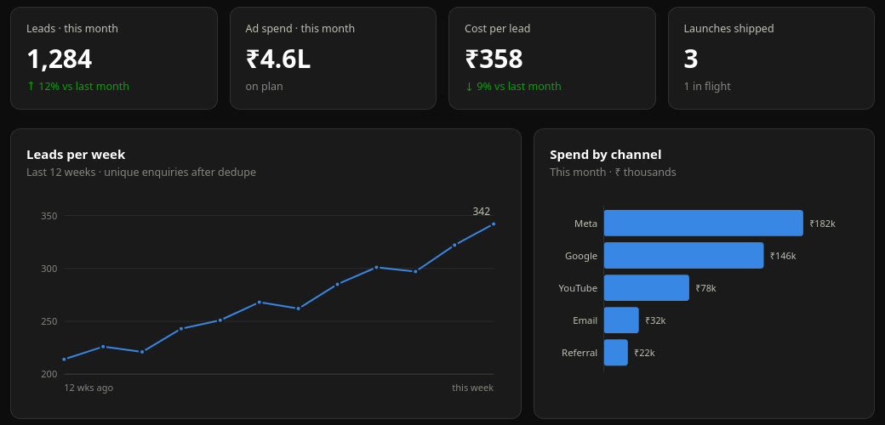
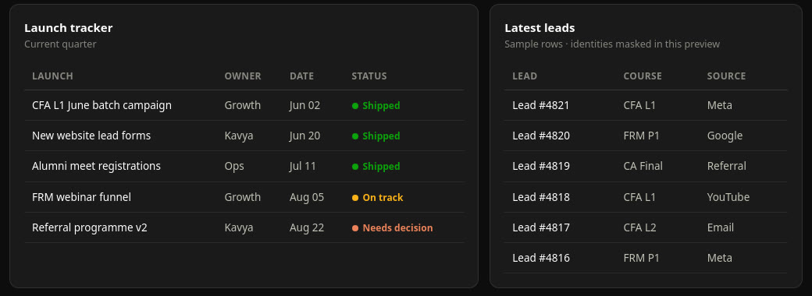
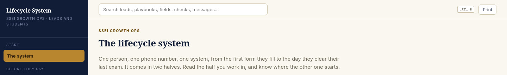

Built and run by Kavya Bahety · SSEI growth team · 2026
Ten spreadsheets became one operating system.
Leads, ad spend, launches, interns, students. Each lived in its own file, in someone's head, or in a chat thread nobody could find on Monday. Now the whole growth team runs on one system, and the weekly review is run from it, not about it.
Before and after
What changed on a Monday morning.
Before
- "Which sheet is the latest?" opened every review.
- Ad spend in one file, leads in another, nobody joined them.
- Intern attendance on WhatsApp, tasks on memory.
- A lead and a paying student were two lists that never met.
- Campaign results arrived as screenshots, weeks late.
After
- One workspace: goals, scorecards, delegations, launch tracker.
- Spend and leads on the same screen, cost per lead live.
- Interns mark attendance, pick tasks and log KPIs in one tool, daily.
- Leads and students share one record, one priority queue.
- Campaign returns refresh themselves every evening at five.
The modules
Seven pieces that talk to each other.
Team workspace
Goals, scorecards and delegations for the growth team. The Monday review runs on this screen.
Live · behind loginGrowth Lab
The intern programme's home: attendance, task board, KPI log, every working day.
Live · behind loginLifecycle system
One person, one phone number, one record from first form to last exam. Twelve lead playbooks, twelve student playbooks, one priority queue.
Live · public explainerCampaign Signal
What each WhatsApp campaign actually returned, matched to payments, refreshed daily by a 5 pm job. Leadership reads it, nobody compiles it.
Live · private linkUTM attribution
Which ad, post or search brought each sign-up on the new website. The spec is public.
Live · spec ↗Decision reports
A growing shelf: campaign ROI, outdoor-media research, a student skills diagnostic, lead-system audits. Each one a page, not a deck.
RollingThe plumbing
One database, row-level security, a private loader for anything sensitive, nightly jobs. The public repo holds only the shape, never the numbers.
Always onScreens
What it looks like.



The real screens carry real revenue, lead and staff numbers, so they stay behind the team login. The sample workspace uses invented data with the same layout, which is the honest way to show it.
How it is built